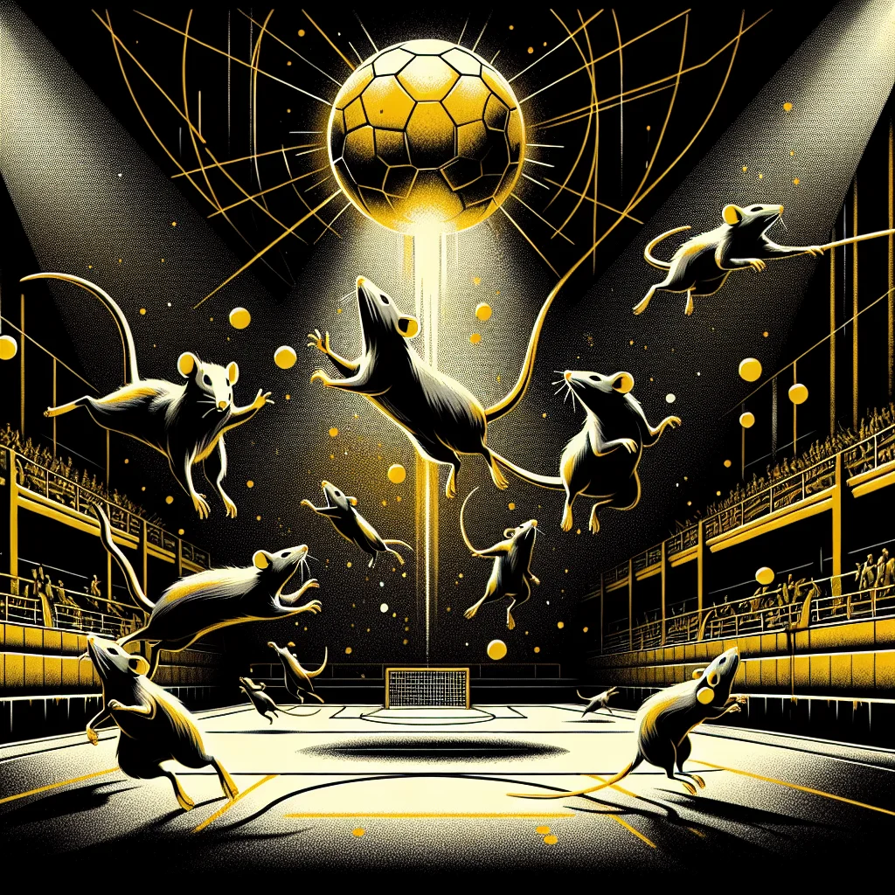

{kind=link}
{kind=link}
Subterranean Showdowns: Rat Gravityball Takes Off
Gravityball is taking Ratopolis by storm, as rats from all boroughs swarm to underground arenas to watch this thrilling new sport—a blend of agility and strategy defying the very laws of physics in a way only our clever critters can.
3 minute read •
Comments

Gravityball, with its unique combination of high-flying acrobatics and rapid ground maneuvers, is entrenched as a must-see spectacle. The sport involves teams of four, maneuvering a lightweight sphere through an intricate course, using natural magnets interspersed to either aid or obstruct movement. The objective is to score by landing the sphere into the opponent's designated zone.
Only recently have our tunnels echoed with the cheer of this sport, which has seen a meteoric rise over the past few months. Not long ago, small groups of enthusiasts gathered in basements, but now, entire boroughs are turning out en masse to support their favorite teams.
"Gravityball is more than just a game; it's a way for us to defy the odds and soar to new heights,” praised Sly Squeaker, one of the sport’s most celebrated players. "This sport has brought out a community spirit we long forgot."
Grassroots efforts have been pivotal, with local clubs spearheading monthly matches and neighborhood leagues sprouting like mushrooms after rain. Organizations like Rodent Recreation and Clan of Claws have played fundamental roles. These grassroots movements are credited for catapulting Gravityball from a casual pastime to a citywide sensation.
"We've seen an incredible turnout at our practices. The enthusiasm is palpable,” remarked Coach Furroughs, mentor to the Ratropolis Rockettes. “What’s thrilling is the diverse demographic: young, old, experienced, and novices alike are participating.”
While fan perspectives vary, the excitement is unanimous. "It's the most exciting thing to hit Ratopolis since the invention of cheese wheels!” shrieked Bitsy Whiskers, a fervent supporter. The general consensus among Rats is that Gravityball has significantly impacted the city’s sports culture, fostering camaraderie and bringing neighborhoods together in unparalleled joy.
This new love doesn’t come without its challenges. Critics argue that the sport’s underground nature might attract a disreputable crowd or promote unhealthy competition. However, the prevailing sentiment grounds itself in the potential for unity and positive engagement it can bring.
Comparatively, Gravityball has rekindled the fervor previously reserved for Ratball and Tunnel Tackle, yet it is distinguished by its complex dynamics and the sheer thrill of gravity-defying stunts. Local snack stands and small businesses are benefiting too. “The rise of Gravityball has been a boon for my snack stand. Fans can’t get enough of our cheesy treats during matches!” beamed Cheddar Chomp, an entrepreneurial rat from Cheese Wheel Alley.
Originating from the ingenious minds of Egrets O’Maze, this sport traces back to experimental games rats played to escape the monotony of long winters. Early adopters like Striker Scurry and Flicker Fastbolt went on to formalize the rules, thus laying the groundwork for today’s arena showdowns.
Looking ahead, the prospects for professional leagues and large-scale tournaments are promising. Analysts predict that with the growing fervor, professionalization is inevitable, bringing in regulated teams, sponsorships, and perhaps international contests. The sport might evolve beyond the underground, potentially reaching new heights—literally and figuratively.
Gravityball’s astronomical ascent thus underscores a broader societal dynamic where unity and competition coalesce to create something uniquely invigorating. Besides reaffirming Ratopolis’s status as a sporting hub, it provides hope and a sense of belonging in a rapidly evolving urban landscape.
In sum, Gravityball’s rise is a testament to Ratopolis's vibrant and enduring spirit. As the city continues to rally around this electrifying new phenomenon, the call to all pack members is clear: join a match, feel the energy, and let Gravityball lift your spirits to new heights.
So, dear readers, lace up your running tails and come experience the exhilarating escapades that only Gravityball can offer. Here's to chasing dreams, defying gravity, and togetherness—one match at a time.
Looking for more in-depth news and exclusive content? Follow RAT TV for real-time updates, behind-the-scenes insights and the latest breaking news.
Only recently have our tunnels echoed with the cheer of this sport, which has seen a meteoric rise over the past few months. Not long ago, small groups of enthusiasts gathered in basements, but now, entire boroughs are turning out en masse to support their favorite teams.
"Gravityball is more than just a game; it's a way for us to defy the odds and soar to new heights,” praised Sly Squeaker, one of the sport’s most celebrated players. "This sport has brought out a community spirit we long forgot."
Grassroots efforts have been pivotal, with local clubs spearheading monthly matches and neighborhood leagues sprouting like mushrooms after rain. Organizations like Rodent Recreation and Clan of Claws have played fundamental roles. These grassroots movements are credited for catapulting Gravityball from a casual pastime to a citywide sensation.
"We've seen an incredible turnout at our practices. The enthusiasm is palpable,” remarked Coach Furroughs, mentor to the Ratropolis Rockettes. “What’s thrilling is the diverse demographic: young, old, experienced, and novices alike are participating.”
While fan perspectives vary, the excitement is unanimous. "It's the most exciting thing to hit Ratopolis since the invention of cheese wheels!” shrieked Bitsy Whiskers, a fervent supporter. The general consensus among Rats is that Gravityball has significantly impacted the city’s sports culture, fostering camaraderie and bringing neighborhoods together in unparalleled joy.
This new love doesn’t come without its challenges. Critics argue that the sport’s underground nature might attract a disreputable crowd or promote unhealthy competition. However, the prevailing sentiment grounds itself in the potential for unity and positive engagement it can bring.
Comparatively, Gravityball has rekindled the fervor previously reserved for Ratball and Tunnel Tackle, yet it is distinguished by its complex dynamics and the sheer thrill of gravity-defying stunts. Local snack stands and small businesses are benefiting too. “The rise of Gravityball has been a boon for my snack stand. Fans can’t get enough of our cheesy treats during matches!” beamed Cheddar Chomp, an entrepreneurial rat from Cheese Wheel Alley.
Originating from the ingenious minds of Egrets O’Maze, this sport traces back to experimental games rats played to escape the monotony of long winters. Early adopters like Striker Scurry and Flicker Fastbolt went on to formalize the rules, thus laying the groundwork for today’s arena showdowns.
Looking ahead, the prospects for professional leagues and large-scale tournaments are promising. Analysts predict that with the growing fervor, professionalization is inevitable, bringing in regulated teams, sponsorships, and perhaps international contests. The sport might evolve beyond the underground, potentially reaching new heights—literally and figuratively.
Gravityball’s astronomical ascent thus underscores a broader societal dynamic where unity and competition coalesce to create something uniquely invigorating. Besides reaffirming Ratopolis’s status as a sporting hub, it provides hope and a sense of belonging in a rapidly evolving urban landscape.
In sum, Gravityball’s rise is a testament to Ratopolis's vibrant and enduring spirit. As the city continues to rally around this electrifying new phenomenon, the call to all pack members is clear: join a match, feel the energy, and let Gravityball lift your spirits to new heights.
So, dear readers, lace up your running tails and come experience the exhilarating escapades that only Gravityball can offer. Here's to chasing dreams, defying gravity, and togetherness—one match at a time.
Looking for more in-depth news and exclusive content? Follow RAT TV for real-time updates, behind-the-scenes insights and the latest breaking news.
Comments